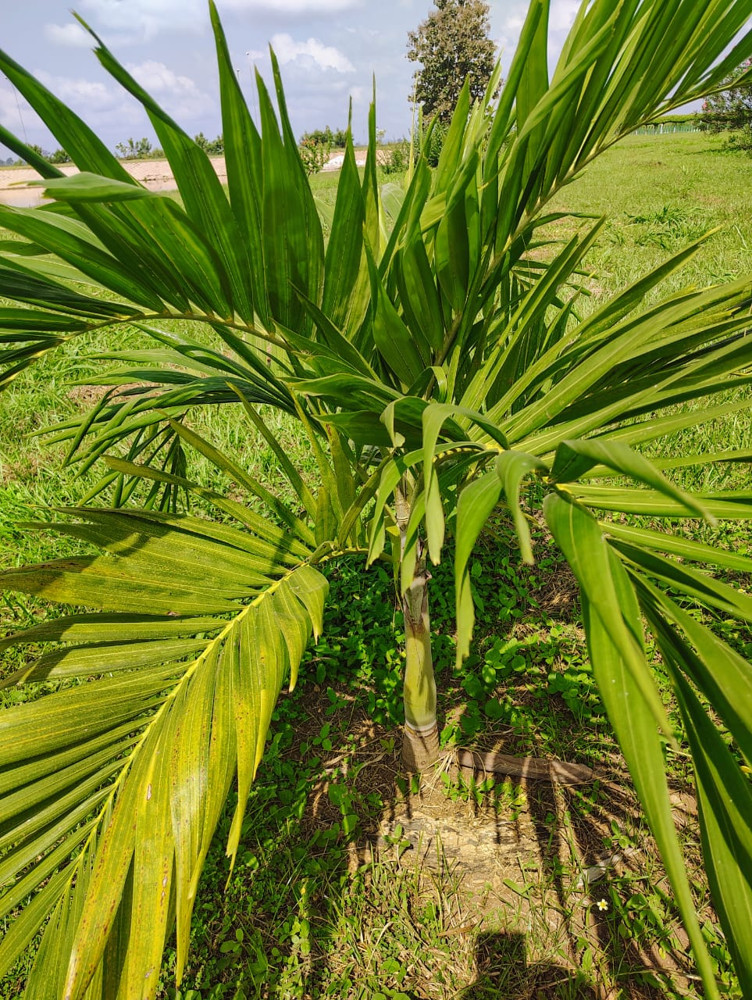
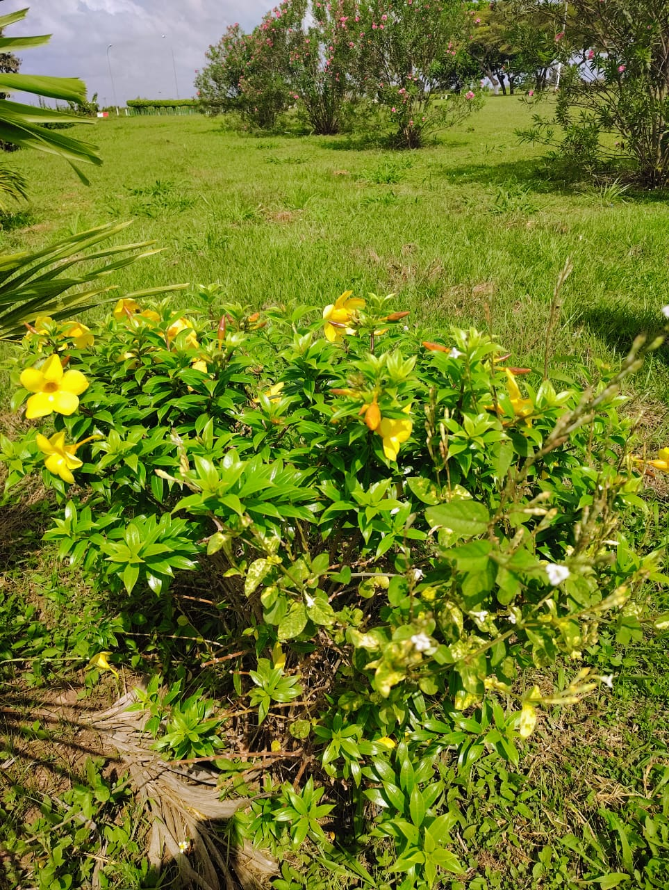
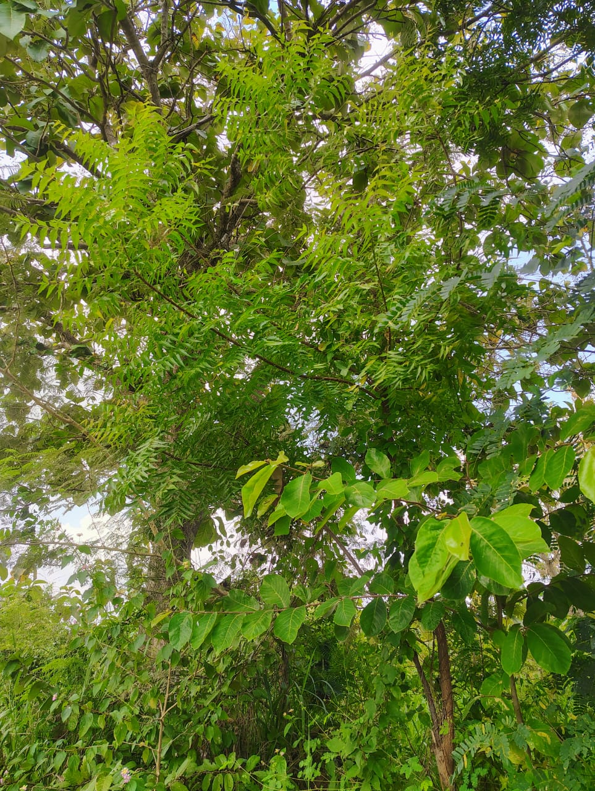
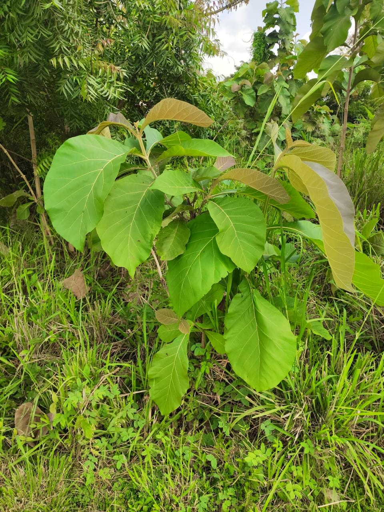
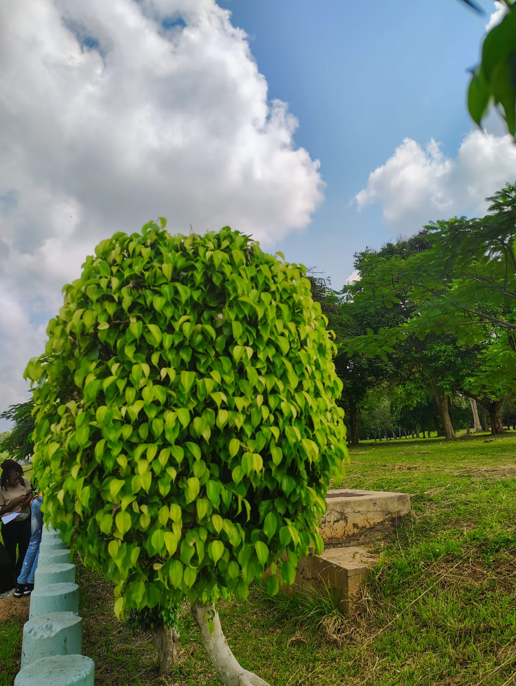
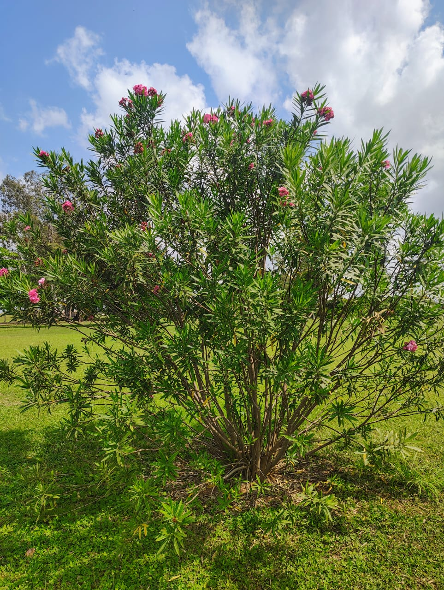
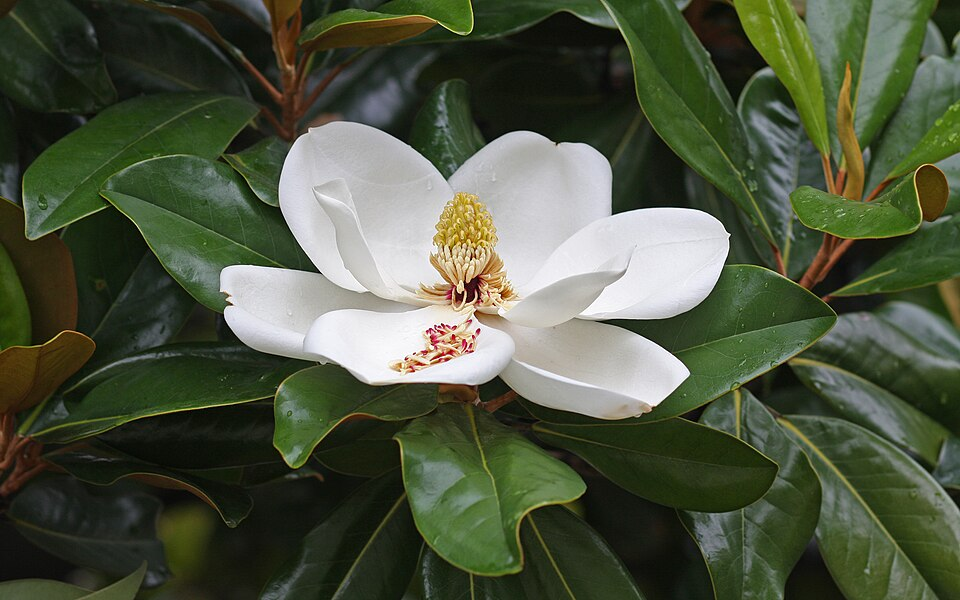
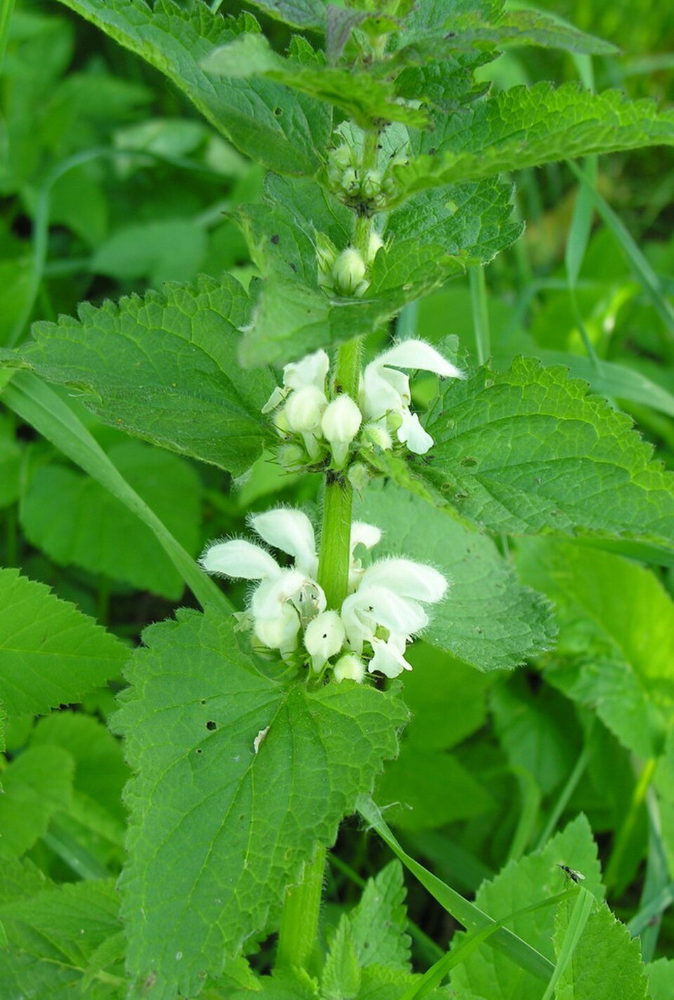

Deux premières feuilles
Leur nom vient de la graine, qui contient deux cotylédons. On les reconnaît aussi à leurs feuilles aux nervures ramifiées, comme un réseau.
L'explosion des fleurs, des couleurs et des fruits.
Plus de 130 millions d'annéesAvec les plantes à fleurs, la Terre s'est mise en couleurs. Au Crétacé, les angiospermes se sont diversifiées autour de lignées proches des dicotylédones, avant que les monocotylédones, puis les graminées, n'émergent. Fleurs, nectar, fruits : tout est fait pour séduire insectes et animaux.
Leur nom vient de la graine, qui contient deux cotylédons. On les reconnaît aussi à leurs feuilles aux nervures ramifiées, comme un réseau.
Couleurs, parfums et nectar attirent les pollinisateurs. En échange, les insectes transportent le pollen : plantes et insectes ont évolué ensemble.
Rosier, haricot, chêne, tournesol, tomate... Les botanistes les regroupent aujourd'hui surtout sous le nom d'eudicotylédones.











